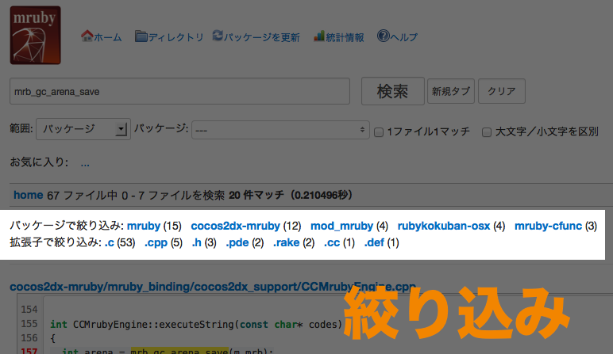

自己紹介

ongaeshi (おんがえし)
- 職業プログラマです
- 趣味でソフトウェアを作って公開しています
- ホームページ : http://ongaeshi.me
最近作ったもの
- RubyKokuban (mruby+openFramework)
- mruby Code Search (mrubyソースコード検索)
- FireLink (Firefoxアドオン)
アジェンダ
- Milkodeって何？
- デモ
- 今年新たに使ったGroongaの機能
- 2014年の抱負
Milkodeって何？
ソースコードに特化した検索エンジンです
- ローカルやWeb上にあるソースコードを登録して高速に検索
- 検索エンジン&ストレージとしてGroonga(Rroonga)を採用
- Ruby + Rroonga だけでどこまで出来るのか？の一例として
特徴は？
- 高速 (100,000ファイル位であれば1〜2秒以内で検索)
- 行指向 (AND検索)
- エディタでもブラウザでも
- パッケージ名、拡張子、ディレクトリ名でドリルダウン New!!
2013年の歩み
- 01-29 TravisCIサポート、svnに対応 (0.9)
- 03-28 複数行の検索に対応 (0.9.9)
- 05-08 Ruby2.0対応 (0.9.9.9)
- 05-12 Milkode 1.0!
- 06-11 るびきちさんに突っ込みを頂いてgmilkを高速化
- 08-10 ctagsとの連携 (1.2)
- 09-16 GNUの'Source code reading' related sitesで紹介される(何故？)
- 10-01 mruby Code Search の作成開始
- 10-03 国際化のプルリクを髙橋さんから頂く
- 10-05 GitHubボタンを追加、キーワードのマッチ箇所をハイライト (1.3)
- 11-29 ドリルダウン、国際化 (1.4) - Today!!
デモ
- http://mruby-code-search.ongaeshi.me
今年新たに使ったGroongaの機能
ドリルダウン
パッケージ、拡張子、ディレクトリによる絞り込み
Rroongaでドリルダウンを使うには？
とっても簡単でした、早く対応すればよかったです。
# Rroongaのテーブルを検索
result = table.select {|record| ... }
# 結果に対してgroupメソッドを呼ぶ
drilled = result.group("suffix") # "suffix"カラムにドリルダウン!!
# 先頭を取得
r = drilled.first
# マッチ数とキーを取得
p [r.n_sub_records, r.key] #=> [356, "md"]
整理すると
MilkodeではUtil::drilldownというメソッドになりました。
# ドリルダウン結果を配列で返す(マッチ数、降順)
# column .. カラム名
# num .. 取得したい結果の数
def self.drilldown(result, column, num = nil)
drilled = result.group(column).map {|record|
[record.n_sub_records, record.key]
}.sort_by {|a|
a[0]
}.reverse
num ? drilled[0, num] : drilled
end
ひっかかったこと
- 拡張子(suffix)が(何故か)textカラムだったのでドリルダウン対象に出来なかった。
- 1.4でstringカラムに変更したのでmilk rebuild --all が必要になってしまった。
- 将来的にドリルダウンしたいものはカラム種類に気を付けましょう。
まとめると
- Rroonga(Groonga)でドリルダウンは超簡単なのでみんなやるといいよ
- ドリルダウンしたい要素のカラム種類には気をつけよう
2014年の抱負
- 検索機能の向上(サジェスト検索やりたい)
- UIの改善(デザインセンスが欲しいです)
- 海外の人にも使ってもらいたい(どこで宣伝すればいいんだろう？)
分からないことだらけです。みなさまどうかお助け下さい。
ありがとうございました
是非Milkodeに触れてみてください。 よかったらこの後の懇親会などで感想お聞かせ下さい。